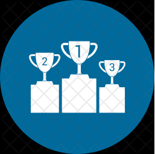

<div class="header">
  <div class="home">
    <button class="routing-btn" mat-button routerLinkActive="active" [routerLinkActiveOptions]="{exact: true}" routerLink="./home">Trang chủ</button>
    <button class="routing-btn" mat-button routerLinkActive="active" [routerLinkActiveOptions]="{exact: true}" routerLink="./suggestion">Gợi ý ngành học</button>
    <button class="routing-btn" mat-button routerLinkActive="active" [routerLinkActiveOptions]="{exact: true}" routerLink="./university">Trường đại học</button>
    <button class="routing-btn" mat-button routerLinkActive="active" [routerLinkActiveOptions]="{exact: true}" routerLink="./major">Ngành học</button>
    <button class="routing-btn" mat-button routerLinkActive="active" [routerLinkActiveOptions]="{exact: true}" routerLink="./test">Luyện thi</button>
  </div>
 
  <div class="login login-button" >
    <app-authentication></app-authentication>
  </div>
  
  <div *ngIf="user" class="login noti-frame center-vertical">
    <div class="noti-button center-all">
      <mat-icon class="bell-icon" (click)="viewNoti()" type="button" cdkOverlayOrigin #trigger="cdkOverlayOrigin"
          matBadge="{{countUnread > 0 ? countUnread : ''}}" matBadgeColor="warn">
        notifications_active
      </mat-icon>
      <ng-template cdkConnectedOverlay [cdkConnectedOverlayOrigin]="trigger" [cdkConnectedOverlayOpen]="isOpen"
      [cdkConnectedOverlayHasBackdrop]="true" (backdropClick)="isOpen = false" class="scroll-frame" >
        <cdk-virtual-scroll-viewport itemSize="110" *ngIf="notifications?.length > 0"
          (scrolledIndexChange)="handler($event)" class="example-list" id="style-7">
          <div class="noti-title-frame">
            <div class="noti-title">Thông báo</div>
            <button mat-icon-button [matMenuTriggerFor]="menu">
              <mat-icon>more_horiz</mat-icon>
            </button>
            <mat-menu class="noti-menu" #menu="matMenu">
              <button (click)="markAsAllRead()" mat-menu-item class="menu-item center-vertical">
                <mat-icon>playlist_add_check</mat-icon>
                <span>Đánh dấu tất cả đã đọc</span>
              </button>
            </mat-menu>
          </div>
          <div class="noti-item-frame" *cdkVirtualFor="let noti of notifications; let index = index;">
            <div class="noti-item" (click)="notiClick(noti)">
              <div class="noti-thumnail center-vertical">
                <div class="thumnail-frame center-all">
                  
                  
                  
                </div>
              </div>
              <div class="noti-item-info">
                <div  class="title">{{noti.message}}</div>
                <div class="time-ago">{{noti.timeAgo}}</div>
              </div>
              <div class="noti-item-is-read center-all">
                {{!noti.isRead ? "&#8226;" : ""}}
              </div>
            </div>
          </div>
          <!-- <div>Đang nạp...</div> -->
        </cdk-virtual-scroll-viewport>

        <div *ngIf="!notifications || notifications.length <= 0" class="example-list">
          Bạn chưa có thông báo.
        </div>
      </ng-template>
    </div>
  </div>
</div>

